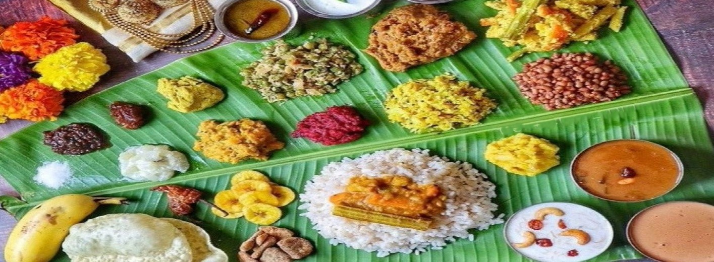
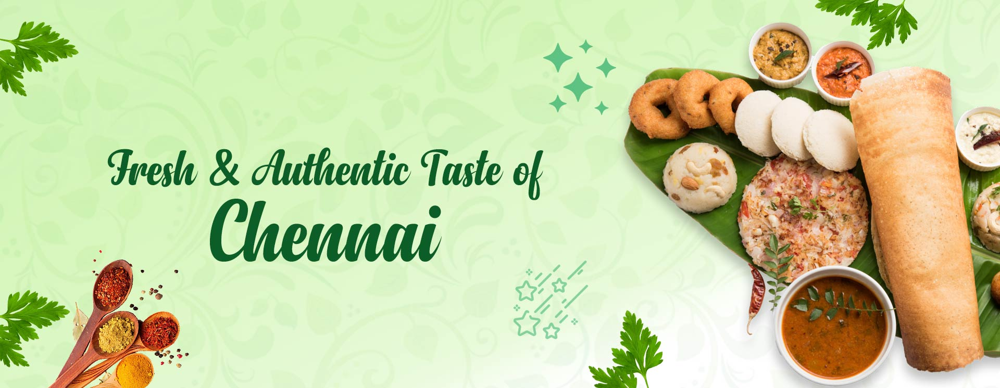

-

Authentic taste of South india
"Every meal tells a story, and Indian food is the storyteller of a rich heritage."
-

Rich food with rich spices
"In south indian food,every spice has a tale to tell,and every dish is a journey".